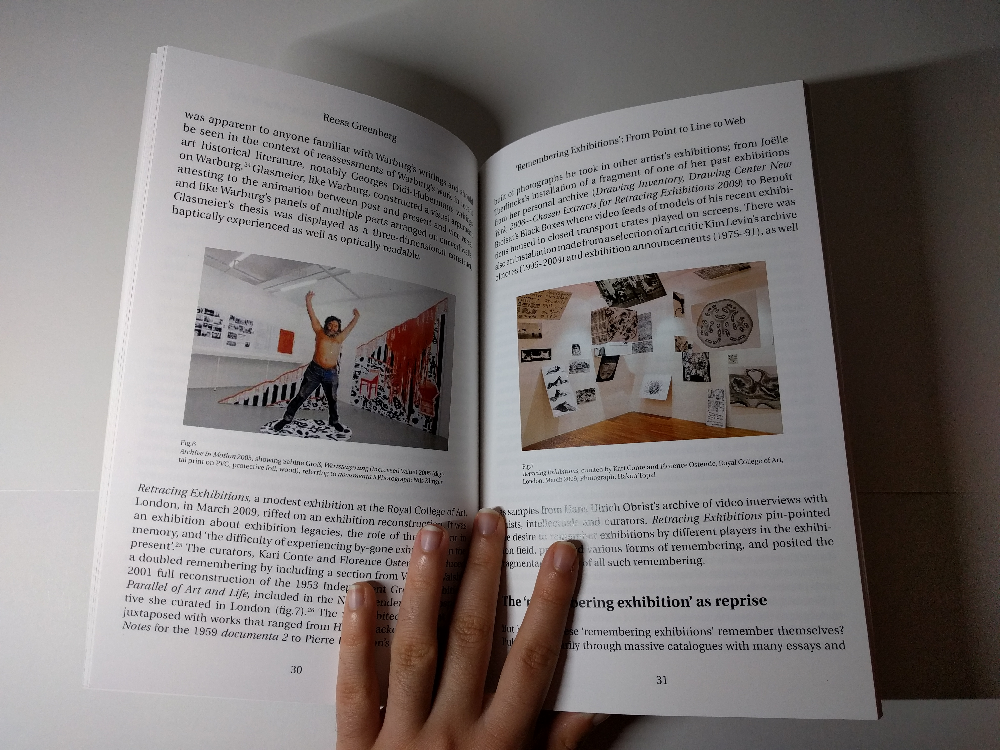
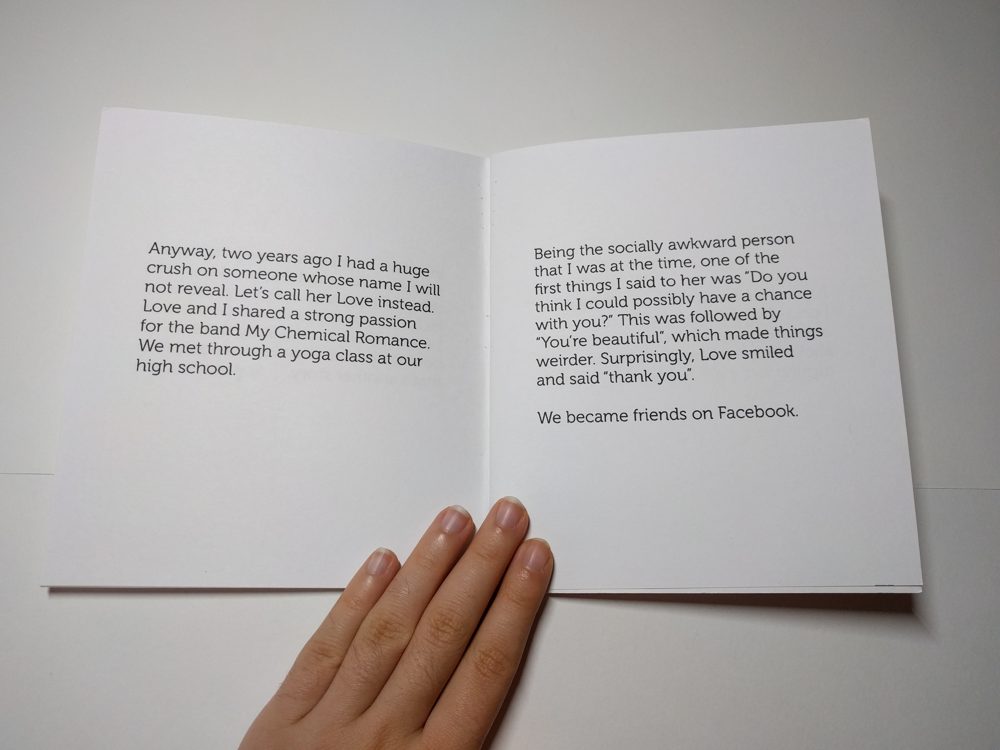
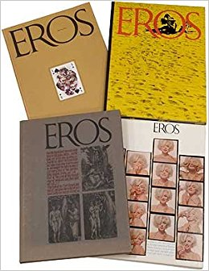
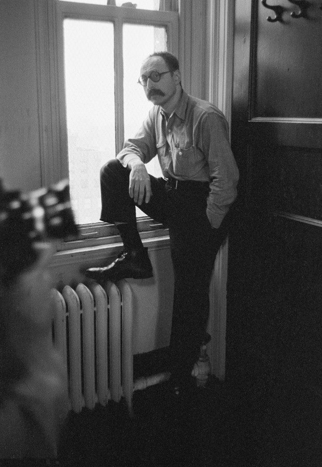

5/5/17
Book Design
I've designed and printed one full-sized book for my core typography class, and several small chapbooks for either myself or other classes. I find book design to be fun and accomplishing, especially when I'm designing it for my own content (I've created two chapbooks of my own creative writing in the past month). It hasn't occurred to me until a few months ago that this is an actual career field and may be worth pursuing. I've spoken to my core typography professor, who also freelances as a book editor, and he said that while it is a useful skill, it does not pay well and is better combined with other skills for a more sustainable job. Nevertheless, the enjoyment I get out of it continues to keep my interest in this field for future professional pursue.
Book design is, in some ways, like information design. The designer's task is to present information—in this case the definition is used loosely—in such a way that makes it clear, legible, and engaging. The main difference between the two categories is that while information design presents facts and data, book design works with any type of content, factual or fictional. Also, books the topic of purpose is more diverse. While information design aims to inform, books are used for a wider range of purpose, such as entertainment. This does not mean that books are dishonest products. They do not hide their purpose, for there is no reason to do so. Books sell words, and it is up to the reader take these words any way they choose.
When I use the term “book”, I'm really talking about any published material that resembles a book. I'm including magazines and chapbooks as well. My favorite layout is found in Eros Magazine.
Only four issues of this magazine were ever published, and its creator Ralph Ginzburg was indicted under federal obscenity laws for the fourth issue. It was published during an era of conservatism, where erotic magazines were not approved of by society. Compared to things published today, this magazine is not obscene at all. It is however a very beautiful example of book design.
I had the pleasure of seeing three of the four issue at the Herb Lubalin Center in Cooper Union, and hope to someday own copies of all four.